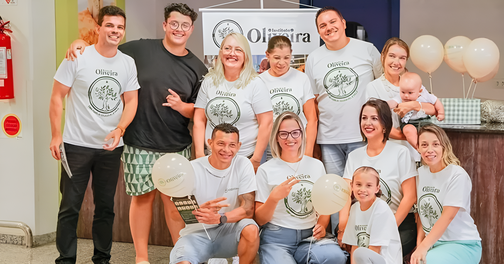
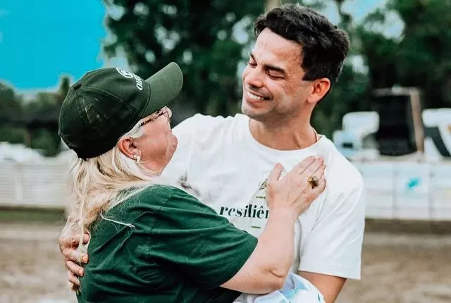
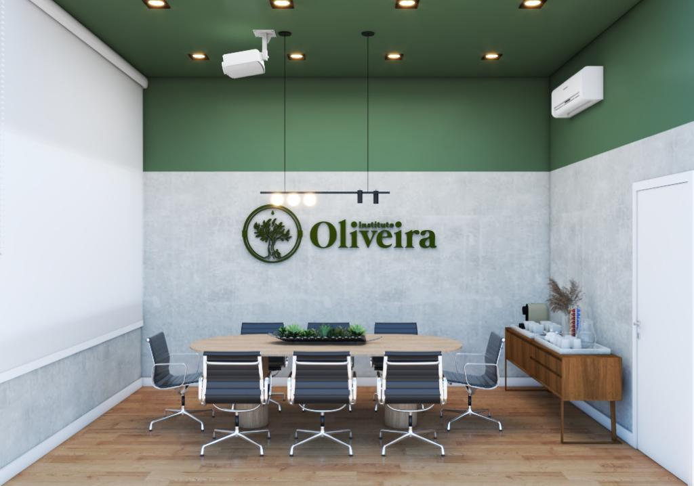
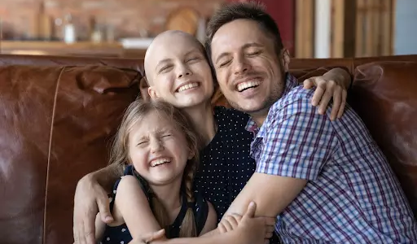

Seja um azeite. Faça sua doação.

O Instituto Oliveira é um empreendimento social sem fins lucrativos, que
apoia famílias com histórico de câncer infantojuvenil
Somos uma Instituição que acolhe e cuida de crianças e adolescentes com câncer, junto a
suas famílias, dando suporte físico, emocional e espiritual, complementando o tratamento
do câncer com uma equipe multiprofissional.
O instituto busca, ainda, auxiliar no processo de ressignificação da doença na vida de cada
membro do núcleo familiar.
Porque cuidar, é além da cura.


Após ele mesmo passar por um tratamento para câncer, o dr. Hugo,
médico e ser humano, compreendeu que não basta prescrever quimioterapia
ou radioterapia ao paciente, sendo este um mero tratamento técnico e
frio, mas cuidar das pessoas como elas merecem.
O Instituto Oliveira nasce a partir da necessidade de acolher o paciente e toda a sua família,
ajudando-os a enfrentar esta situação da melhor forma possível e dando-lhes orientação sobre
todo o processo, a fim de proporcionar-lhes a melhor qualidade de vida possível.
O câncer infantil é uma realidade dolorosa no Brasil , sendo a principal causa de morte entre crianças e jovens de 0 a 19 anos há décadas. Essa triste realidade é agravada pelas desigualdades, refletindo em taxas de sobrevivência que variam de 80% a 20%, dependendo do país, conforme dados da Organização Pan-Americana da Saúde (OPAS). Anualmente, mais de 400.000 crianças e adolescentes com menos de 20 anos são diagnosticados com câncer. A cada 3 minutos, uma criança perde a batalha para essa doença, ressaltando a urgência de diagnósticos precoces e do acesso a cuidados adequados, conforme Childhood Cancer International (CCI).
Oferecemos apoio clínico com uma equipe multidisciplinar em 16 modalidades, emocional e espiritual às crianças e adolescentes com câncer e seus familiares, com base nos valores cristãos. Além disso, realizamos um trabalho de conscientização dos sinais e sintomas do câncer infanto-juvenil.
Oferecemos apoio clínico com uma equipe multidisciplinar em 16 modalidades, emocional e espiritual às crianças e adolescentes com câncer e seus familiares, com base nos valores cristãos. Além disso, realizamos um trabalho de conscientização dos sinais e sintomas do câncer infanto-juvenil.


Acreditamos na transformação e evolução das pessoas, porque as pessoas não são definidas pela enfermidade e dificuldades que estão vivendo. O nosso olhar não é somente para o câncer, mas para a cura da família como um todo. Vemos valor e importância nas pessoas. Cremos que uma família “saudável e feliz” pode motivar e impulsionar outras famílias a serem saudáveis e felizes
Qualificação e Registros UTILIDADE PÚBLICA MUNICIPAL em 15 de setembro de 2023,
através da Lei nº 9.467 foi declarado de Utilidade Pública pelo prefeito municipal Adriano
Bornschein Silva.
Inscrição no Conselho Municipal dos Direitos da Criança e do Adolescente - CMDCA de
Joinville, registro sob nº 117, em 14 de dezembro de 2023.
Acreditamos na transformação e evolução das pessoas, porque as elas não são
definidas pela enfermidade ou pelas dificuldades que estão enfrentando. O nosso olhar
não é somente para o câncer, mas para a cura da família como um todo. Vemos valor e
importância nas pessoas. Cremos que uma família “saudável e feliz” pode motivar e
impulsionar outras famílias a serem saudáveis e felizes.
Seja um azeite, faça uma doação ou se voluntarie conosco.